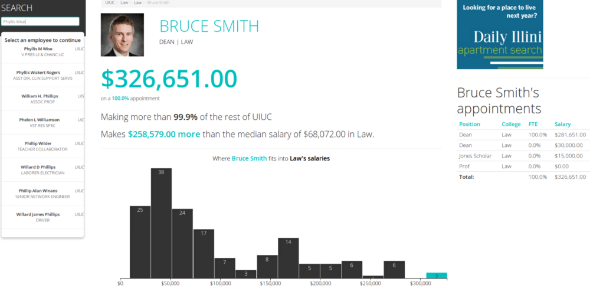

programmer | journalist
NATHANIEL LASH
the future is now come on let's go it's leaving without us
Clips and projects
Salary Guide
See more
Salary Guide visualizes and contextualizes information about the salaries of public state employees at the University of Illinois. Click here to read more about my design and editorial process.
Built with Django, PostgreSQL, Numpy, ElasticSearch and many, many more.
How the Illinois Legislature voted on the pension overhaul

See more
On one of those days where the state legislature unexpectedly passes a landmark bill, we had to move quickly. The resulting map demonstrates the upstate-downstate vote split in Illinois and, after some coaxing with our CMS, played nicely with our story.
Built with QGIS and Leaflet.js.
Unofficial 2013

See more
Lovingly referred to as "The Blob" by our staff, this infographic visualized crime data on our university's favorite drinking holiday, showing how activity by out-of-towners increased as the day wore on.
Built with D3.js and Adobe Illustrator.
UI admits record number of students to Class of 2017

See more
My first discovery of jQuery binded to D3 events (I can do that?!) visualized how different groups of students applied and enrolled at the U of I varied over the years. Using jQuery events, I was able to guide users through recent enrollment trends.
Built with D3.js.
Bill that would give alumni majority stake in board of trustees delayed

See more
When I came across a state bill that would change how the officers of the state university system, I wanted to look at how other states appointed those officers. My reporting also detailed the interesting relationship between the school's alumni groups and legislature.
Built with Adobe Illustrator.
I-Elect 2012

See more
For a class focused on the 2012 elections, I learned how to analyze survey data to extract statistically significant findings about student voting habits and preferences. This monstrosity, for which we raised money to print on Election Day 2012, details many of those relevant findings.
Built with SPSS Statistics, Adobe Illustrator and InDesign.
Aerial Disappearances

See more
When I began to wonder how frequently planes disappear without a trace like MH370, I hypothesized that it's become less and less frequent as tracking technology becomes more advanced. After scraping this Wiki article, I threw together a quick viz to demonstrate the small and infrequent disappearances in recent decades.
Built with D3.
Landlord dispute leaves mother, son homeless

See more
One of my few writing clips of which I'm proud, this story came about after a woman approached The Daily Illini about her bizzare case of eviction. As I started looking into the legal issues with her case and the tenuous future she and her son would face with the loss of her Section 8 housing voucher, I went about reporting this agonizing story that highlighted some of the deepest issues with housing and landlords in Champaign-Urbana.